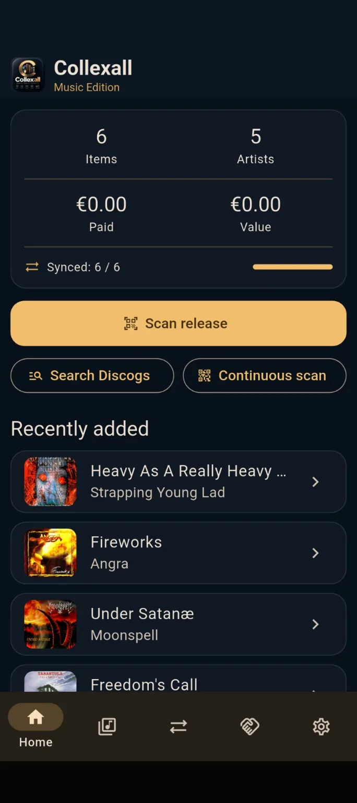
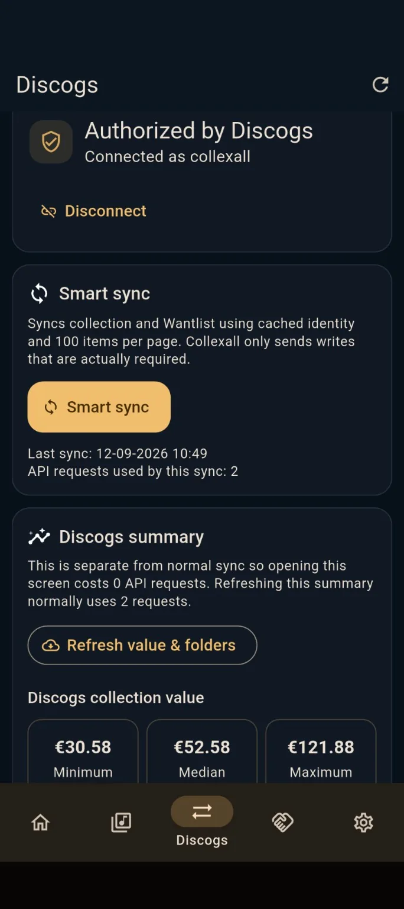
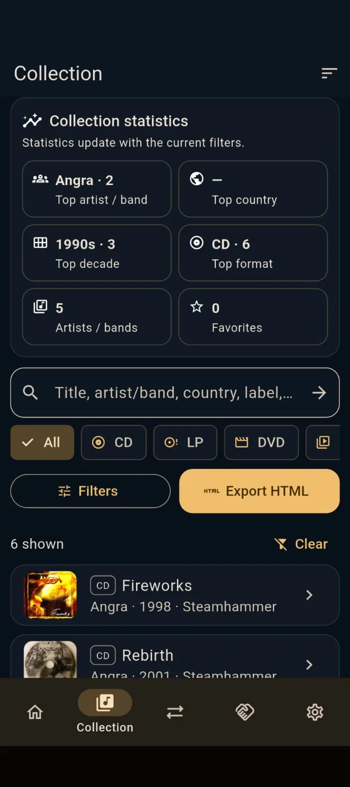
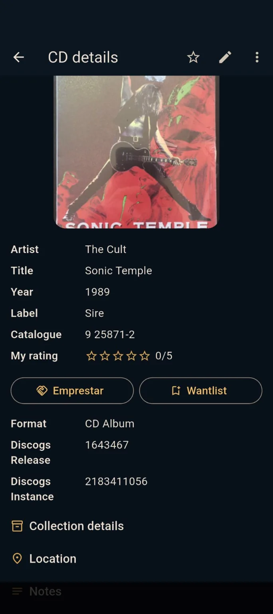
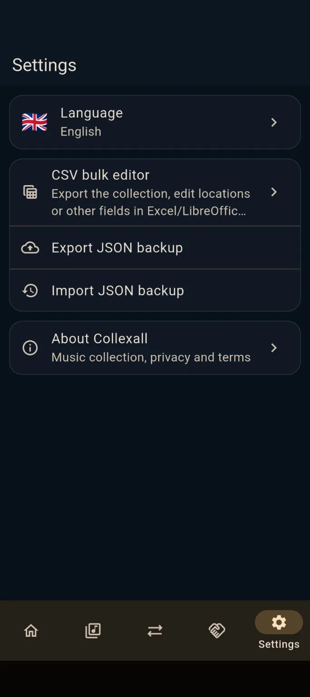

⌗
Scan releases
Barcode scanning plus manual Discogs search for older or ambiguous editions.
Catalog CDs, vinyl, music DVDs and Blu-rays. Scan barcodes, identify exact releases with Discogs, organise every copy and keep your collection under your control.

Fast to catalogue, detailed enough for serious collectors, and designed so your data remains portable.
Barcode scanning plus manual Discogs search for older or ambiguous editions.
Top artists and bands, decades, countries, formats, labels and favourites.
Room, furniture, shelf and position: know exactly where every copy lives.
Track what is out, who has it and when it should come back.
Rate your copies, mark favourites and manage releases you still want.
See Discogs minimum, median and maximum collection estimates.
API-aware Discogs synchronisation designed to avoid unnecessary requests.
CSV round-trip plus JSON backup/import for portability and control.
Collexall connects to your Discogs account and keeps the local collection useful on its own. Smart Sync reads collection and Wantlist efficiently and only sends writes that are actually required.
Collexall uses the Discogs API but is not affiliated with, sponsored by, or endorsed by Discogs. Data provided by Discogs remains subject to Discogs terms.

Real screens from the current Music Edition.



Export the collection to CSV, edit locations or other fields in Excel or LibreOffice, then import it again. Stable IDs update the correct copy instead of creating duplicates.
Your collection is stored locally. Online services are used when you choose to search, authorize or synchronise. Exported files remain under your control.
An independent Android collection manager for people who still care about the physical edition.
Android · Active development